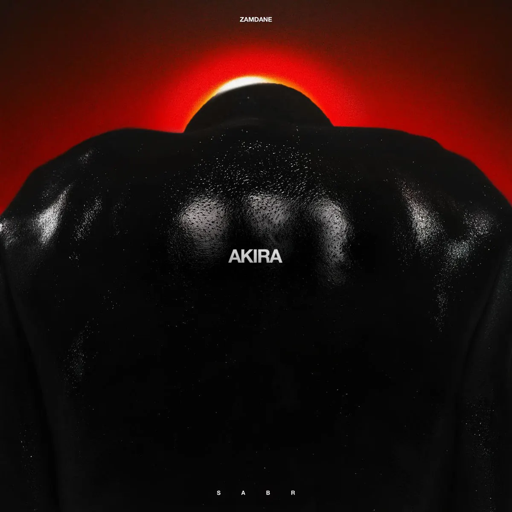

Publié le 9 novembre 2026

Zamdane entame en novembre 2026 la phase automnale de sa tournée nationale. Le rappeur marseillais a joué à Brest le 6 novembre puis à Saint-Herblain le 7 novembre 2026. Il y présente notamment son single Akira (SABR).
Comment s'organise la tournée automnale 2026 de Zamdane ?
La tournée de Zamdane traverse plusieurs régions de France ainsi que la Suisse pendant la fin d'année 2026. L'artiste a replacé ses concerts initiaux du printemps vers l'automne 2026 pour des raisons familiales, comme le confirme la billetterie de La Carrière à Saint-Herblain.
Après ses premiers passages en Bretagne et près de Nantes, Zamdane poursuit sa route vers Metz, Mulhouse et Rouen. Cette série de concerts permet au public de retrouver sur scène les morceaux du projet RAHMA. L'artiste interprète également ses sorties plus récentes.
Le public retrouve un artiste très proche de son auditoire lors de chaque représentation. Pour consulter les rendez-vous scéniques programmés dans chaque région, vous pouvez parcourir notre agenda des concerts rap en France.
| Date | Ville | Salle |
|---|---|---|
| 6 novembre 2026 | Brest | La Carène |
| 7 novembre 2026 | Saint-Herblain (Nantes) | La Carrière |
| 12 novembre 2026 | Metz | La BAM |
| 13 novembre 2026 | Mulhouse | Le Noumatrouff |
| 19 novembre 2026 | Rouen | Le 106 |
| 26 novembre 2026 | Nancy | L'Autre Canal |
| 28 novembre 2026 | Lausanne | Les Docks |
Que représente le single Akira (SABR) dans le répertoire de Zamdane ?
Sorti le 17 septembre 2026 sur les plateformes d'écoute selon la page de la sortie, le titre Akira (SABR) s'inscrit dans le registre introspectif de l'artiste. Le morceau aborde la patience et la résilience à travers une écriture personnelle.
La composition musicale réunissant Thug Dance, Jy et Winalca repose sur une instrumentale mélancolique. Zamdane y pose un texte où le concept de SABR, désignant la patience endurante, sert de fil conducteur à son interprétation.
Sur scène, l'accueil réservé au titre confirme l'attachement des fans à cette sincérité. Originaire des quartiers marseillais dont nous suivons la scène sur notre page dédiée aux concerts rap à Marseille, le rappeur transforme ce morceau en temps fort de son show.
Pourquoi le live demeure-t-il essentiel dans la carrière de Zamdane ?
La scène représente le cœur du modèle indépendant porté par Zamdane et son label Affamés Records. Après avoir joué dans des salles parisiennes d'envergure, l'artiste privilégie une grande proximité avec les salles en région.
Cette démarche lui permet d'inscrire son répertoire dans la durée sans dépendre des tendances éphémères. Chaque concert devient un moment d'échange direct où le public reprend en chœur les refrains.
La tournée d'automne 2026 confirme ainsi la solidité d'un parcours bâti sur le terrain. L'étape près de Nantes répertoriée dans notre guide des concerts rap à Nantes témoigne de cet engouement constant.